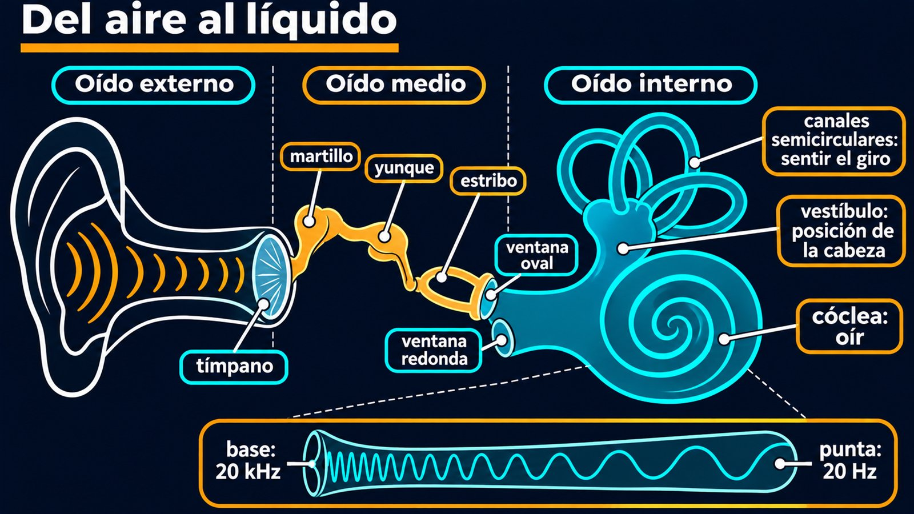

Fluidos en la cóclea y el sentido del equilibrio
Dentro de tu cráneo hay dos instrumentos de fluidos muy finos, a pocos milímetros uno del otro. Uno convierte una onda en un análisis de frecuencias, y el otro detecta cada giro de la cabeza con un principio que podrías repetir con una taza de café. En los dos casos, lo que sienten las células nerviosas es un líquido que se mueve.
El oído interno tiene dos regiones: la cóclea, para oír, y el vestíbulo, para el equilibrio [1]. La onda de sonido hace vibrar el tímpano, y esa vibración se amplifica al pasar por los huesecillos: martillo, yunque y estribo [1]. El estribo empuja la ventana oval, y en el líquido de la cóclea aparecen ondas de presión [1].

Ese paso es la parte difícil. El aire es muy compresible y liviano, y el líquido, casi incompresible y denso: la mayor parte de un sonido que llegara al agua directamente rebotaría. Los huesecillos resuelven el problema, ya que convierten una vibración amplia y débil en otra más chica y más intensa (un comentario propio).
La cóclea es un tubo lleno de líquido, enrollado. Parte de la ventana oval por la rampa vestibular, da la vuelta en la punta y regresa por la rampa timpánica [1]. En el medio corre el conducto coclear, cuya pared es la membrana basilar, sobre la que están las células ciliadas [1].
Cuando las ondas de líquido avanzan, la membrana basilar se mueve en un lugar específico, según la frecuencia [1]. Las frecuencias altas mueven la región cercana a la base de la cóclea; las bajas, la región de la punta [1]. Así, cada tono activa un grupo distinto de células [1]: sonidos de 20 Hz se detectan en la punta, y los de 20 kHz, en la base, cerca de las ventanas [1]. Como un líquido casi no se comprime, cuando el estribo empuja, algo tiene que ceder: la ventana redonda, en el otro extremo del recorrido, se abomba hacia afuera (un razonamiento propio a partir de la incompresibilidad).
Un piano al revés: en un piano, apretar una tecla hace sonar un lugar determinado. En la cóclea, un sonido complejo llega y «aprieta» muchas teclas a la vez, cada frecuencia en su lugar. Lo que el cerebro recibe es, literalmente, una lista de frecuencias.
Los canales semicirculares son tres anillos llenos de líquido, en distintos planos [1]. En la base de cada uno hay una zona ensanchada, la ampolla, con células ciliadas cuyas prolongaciones se meten en una membrana llamada cúpula [1].
Cuando girás la cabeza, el canal gira con vos, pero el líquido se atrasa, y eso dobla la cúpula en sentido opuesto al movimiento [1]. Es inercia pura: lo mismo que cuando girás una taza de café y el líquido se queda quieto al principio. Con tres canales orientados de distintas formas, el cerebro puede reconstruir el eje del giro. Si después de dar vueltas te frenás de golpe, el líquido sigue girando un rato, y eso explica el mareo (un razonamiento propio).
El utrículo y el sáculo detectan la posición de la cabeza [1]. Las células ciliadas se meten en un gel, la membrana otolítica, que lleva encima cristales de carbonato de calcio, los otolitos [1]. Esos cristales la hacen más pesada arriba [1]. Al inclinar la cabeza, la membrana se desliza en la dirección de la gravedad y dobla las células [1]. Es un acelerómetro: la diferencia de inercia entre las células y la membrana también detecta la aceleración lineal [1].
Dos sensores, una misma pieza: en la cóclea y en el vestíbulo, el transductor es la célula ciliada: unas prolongaciones que se doblan y producen una señal nerviosa [1]. Cambia lo que las mueve: una onda, un líquido atrasado o una carga con gravedad.
Para oír, la cóclea transforma una vibración en ondas de un líquido, y una membrana separa las frecuencias por lugar. Para sentir el giro, un fluido que se atrasa dobla la cúpula. Para sentir la inclinación, unos cristales cargan un gel. El sentido del equilibrio y el de la audición son mecánica de fluidos a escala de milímetros.
Pregunta para la comunidad: ¿Por qué no sentís el giro si das vueltas a velocidad constante durante mucho rato, y lo sentís cuando parás? Pensá en qué momento el líquido y el canal se mueven igual.